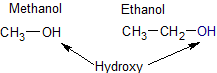
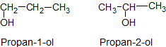
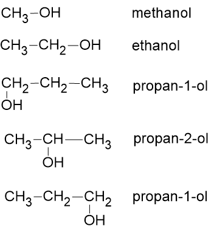
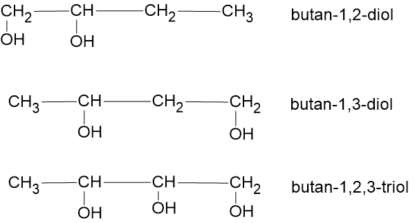
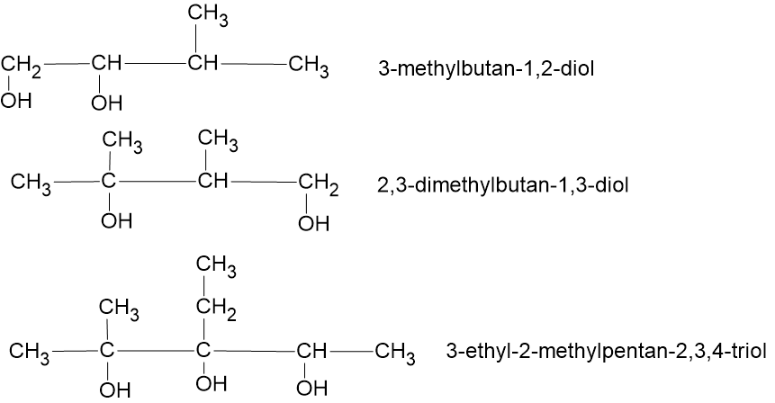
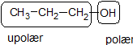
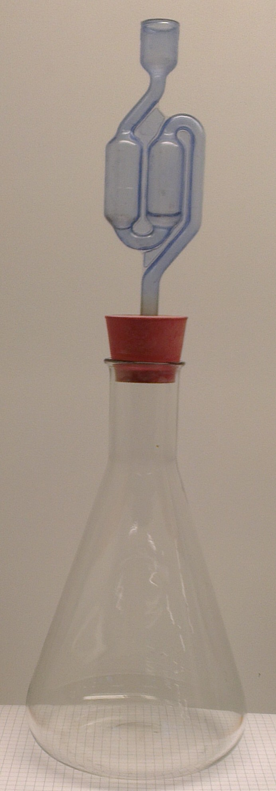
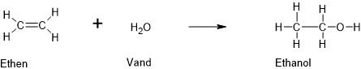

Formålet med dette kapitel er:
I dagligdagen kender vi alkohol som et rusmiddel der findes i øl, vin og spiritus. Dette stof hedder i kemien for ethanol. I kemien har alkohol en bredere betydning. I kemien er alkohol betegnelsen for en hel klasse af stoffer. Ethanol er bare ét eksempel på en alkohol, der findes mange andre.
Det som er fælles for alle alkoholer er, at de indeholder gruppen -OH. Denne gruppe kaldes for hydroxy. Et par eksempler på alkoholer er vist på figuren. Bemærk at navngivningsregler omtales i et senere afsnit.

Figur 11.1 viser alkoholer med henholdsvis 1 og 2 carbonatomer i kæden. Når vi går videre til 3 carbonatomer, har vi imidlertid to forskellige muligheder for at tegne en strukturformel, se figur 11.2. Hydroxygruppen (OH) kan sidde på carbon nr. 1 eller på carbon nr. 2. Det giver to forskellige stoffer, med forskellige kogepunkter, densiteter osv. De har også forskellige navne, som det fremgår af næste afsnit.

De to alkoholer med 3 carbon-atomer i kæden, har samme molekylformel, nemlig C3H8O, men forskellig strukturformel. Sådanne to stoffer siger vi er isomere. To (eller flere) stoffer er altså isomere hvis de har ens molekylformel, men forskellig strukturformel.
Ud fra figur 11.2 kan man allerede få en idé om hvordan alkoholer navngives. De to første alkoholer (dvs. med 1 og 2 carbon-atomer i kæden) hedder methanol og ethanol. Bemærk ligheden med alkaner (foregående kapitel), hvor de to første hedder methan og ethan. Et navn på et alkohol får altså endelsen -ol.
Vi deler navngivningen op i tre dele, før vi til sidst sammenfatter reglerne.
Man finder længste C-kæde og finder navnet på det tilsvarende alkan (se forrige kapitel). Derefter sætter man endelsen "ol" på.
Som det fremgår af afsnittet om isomeri, er der to forskellige alkoholer med 3 carbonatomer. Vi bliver derfor også nødt til at have to forskellige navne. Vi danner navnet ved at indsætte et tal i navnet umiddelbart foran endelsen "ol"; dette tal fortæller på hvilket carbonatom OH sidder. Man skal tælle fra den ende af C-kæden der giver det lavest mulige nummer til OH-gruppen. Se figur 11.3.

Hvis der sidder flere hydroxygrupper, skal hver hydroxygruppes nummer angives. Endvidere skal det med et præfiks (di, tri, tretra ...) umiddelbart foran "ol" angives hvor mange hydroxygrupper der er. Se figur 11.4.

Hvis der sidder sidekæder (methyl, ethyl ...) skal de navngives efter samme regler som vi brugte i sidste kapitel om alkaner. Man skal huske at det er hydroxygruppens placering der fastlægger nummereringsrækkefølgen, ikke sidekædens placering. Se figur 11.5 for eksempler.

Ethanol er det mest kendte alkohol. Det bruges som beruselsesmiddel i øl, vin og spiritus. Ethanol er også et godt opløsningsmiddel og bruges som sådan i medicin, parfume og andre kemiske produkter. Ethanol bruges i rengøringsmidler da det kan opløse fedt. Ethanol dræber bakterier og anvendes derfor til at sterilisere instrumenter og til desinficering af huden før en indsprøjtning.
Methanol er en farveløs væske ved stuetemperatur. Det bruges til opløsningsmiddel i den kemiske industri og som brændstof i speedwaymotorcykler. Methanol kan fremstilles ved tørdestillation af træ og kaldes derfor også for træsprit. Nogle har forsøgt at drikke det i stedet for ethanol, det er dog en dårlig ide da det er giftigt. Det kan medføre blindhed og i værste fald døden.
Propan-2-ol anvendes i sprinklervæske, bl.a. for at sænke frysepunktet for sprinklervæsken. Det anvendes også som kaburatorsprit.
Ethan-1,2-diol er en tyktflydende væske. Stoffet kaldes i daglig tale for glykol. Det bruges som kølervæske i biler og til fremstilling af plast.
Alkoholer kan brænde, fx ethanol: C2H6O(l) + 3O2(g) → 2CO2(g) + 3H2O(g). Nogle steder bruger man ethanol som brændstof i biler. I Danmark bruges det indtil videre kun i begrænset omfang.
Alkoholer er blandbare med vand (dog ikke alle). Blandbarheden afhænger af antallet af hydroxygrupper og antallet af C-atomer i kæden. Hydroxygruppen er polær (elektronegativeteten for O er 3,5 og for H er den 2,1, dette giver en forskel på 1,4). C-H-bindinger er upolære (elektronegativiteten for C er 2,5 og for H er den 2,1, dette giver en forskel på 0,4, altså mindre end 0,5). Dvs. at den del af et alkoholmolekyle der indeholder hydroxygruppen er polær, mens den del der kun indeholder C-H-bindinger er upolær. Se figur 11.6.

Vand er polært. Det gælder derfor, at jo flere hydroxygrupper der er i forhold til antal C-atomer, desto mere blandbart er alkoholen med vand. Se tabellen nedenfor.
| Navn | Formel | Opløselighed |
|---|---|---|
| methanol | CH3-OH | fuldstændig blandbar |
| ethanol | CH3-CH2-OH | fuldstændig blandbar |
| propan-1-ol | CH3-CH2-CH2-OH | fuldstændig blandbar |
| butan-1-ol | CH3-CH2-CH2-CH2-OH | 7,9 g/100 mL vand |
| pentan-1-ol | CH3-CH2-CH2-CH2-CH2-OH | 2,3 g/100 mL vand |
| hexan-1-ol | CH3-CH2-CH2-CH2-CH2-CH2-OH | 0,6 g/100 mL vand |
Det mest kendte alkohol er ethanol (der i daglig tale blot kaldes for alkohol). Ethanol kan fremstilles på flere måder. Vi skal her se to måder at fremstille ethanol på.
Ethanol kan fremstilles ved gæring af glucose. Glucose er en art sukker og gærceller (levende organismer) kan omdanne glucose til ethanol og carbondioxid, jf. reaktionsskemaet C6H12O6(aq) → 2CO2(g) + 2CH3CH2OH(l). Dette skal ske i et iltfrit miljø (anaerob proces). Denne måde til fremstilling af ethanol bruges når man skal fremstille øl, vin og spiritus. I praksis opløser man glucose, gær og næringssalte i vand i en kolbe. På kolben sætter man en vandlås, dette sikrer at dannet carbondioxid kan slippe ud, mens dioxygen (ilt) ikke kan slippe ind. Se figur 11.7.

Ethanol kan også fremstilles ved en såkaldt additionsproces. Her reagerer gassen ethen med vanddamp og giver ethanol, se figur 11.6. Det kaldes en additionsproces, fordi man adderer (lægger til) et lille molekyle (vand) til et større molekyle (ethen). Denne måde til fremstilling af ethanol, bruges til fremstilling af ethanol til teknisk brug (opløsningsmiddel mv.).
